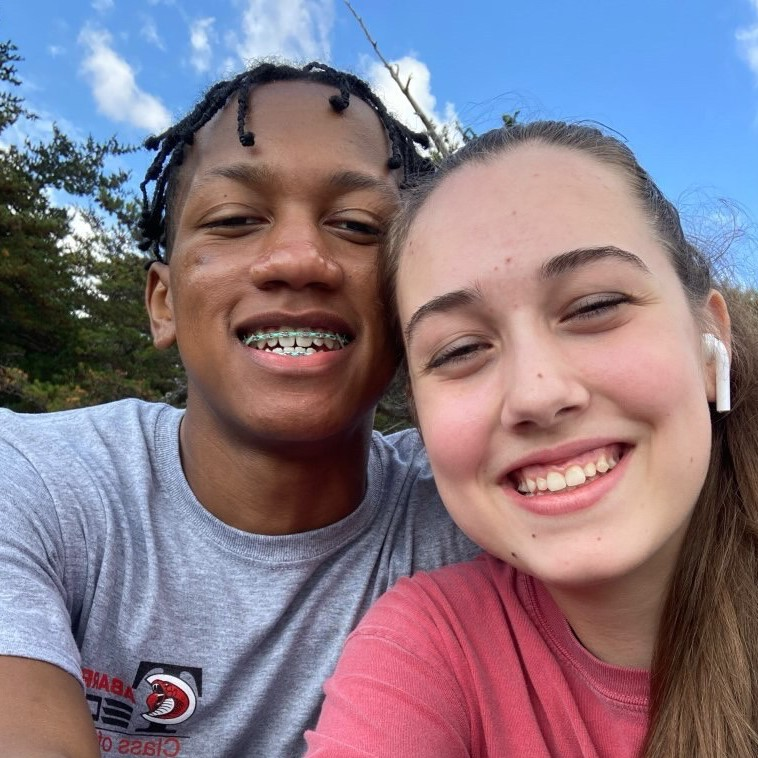

Me and my girlfriend on a hiking trip in the mountains
Personal background: Hello, my name is Xavier Faulkner. I am a middle child in a family of five. I grew up in Beltsville, Maryland. As a child, I always enjoyed building or fixing anything I could get my hands on. Anything that involved any type of creativity I loved doing. I moved to NC about 9 years ago and I've lived here ever since. I'm currently 19 years old and attending UNCC full time.
Professional: I got my first job at my uncle's gelato shop a few summers ago. The following school year I got a job at Cici's pizza. My last and most recent job was at Fedex ground as a package handler. However, my goal is to become a software engineer.
Academic background: In 2016 I started attending an early college called Cabarrus Early College of Technology. I graduated in 2020 with my high school diploma as well as an Associate's degree in applied science focused in software development. In 2020, I started at UNCC as a junior and am currently attending as a senior with an expected graduation date of May 2022.
Background in the subject matter of this course: I started programming with I was around 12 years old because I wanted to learn how to make games. I taught myself Java by watching Youtube videos and reading articles online. By high school, I was fluent in Java and very comfortable with OOP. This made my programming classes much easier to complete and helped me learn more throughout high school. Today, I am proficient in a few different languages including python, java, C#, C++, and Visual Basic. I am also comfortable with HTML, CSS, and SQL.
Primary Computer Platform: Windows 10 home
Courses I'm taking and reason for each:
ITCS 3145 - Parallel and Distributed Computing: Required for my degree and relevant to my career.
ITIS 3135 - Web-Based Application Design and Development: Required for my degree and relevant to my career.
ITSC 2175 - Logic and Algorithms: Required for my degree and relevant to my career.
ITSC 3688 - Computers and Their Impact on Society: Required for my degree and relevant to my career.
ITSC 4155 - Software Development Projects: Required for my degree and relevant to my career.
MATH 2164 - Matrices & Linear Algebra: Required for my degree and relevant to my career.
Funny story or interesting item about yourself to remember you by:
I love sewing and tried to start my own company making custom t-shirts.